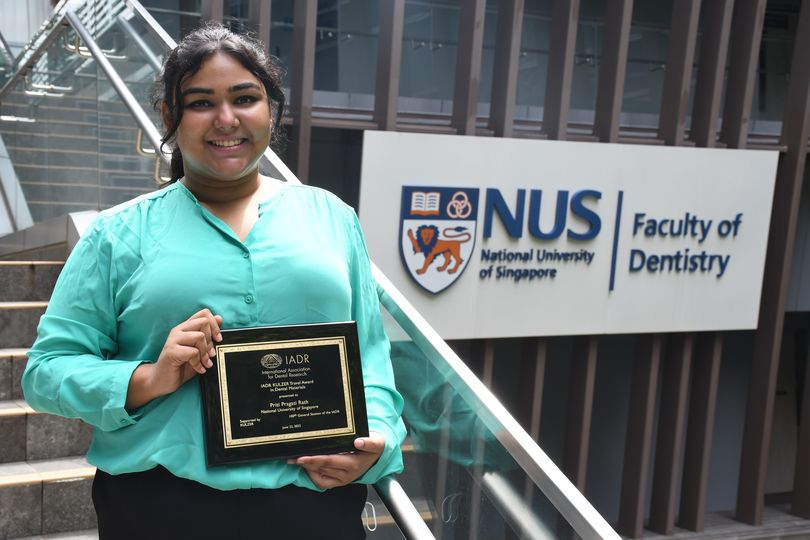

Priti Pragati Rath receives the IADR Kulzer Award 2023
The award, sponsored by Kulzer and granted by the International Association for Dental, Oral and Craniofacial Research, recognises emerging researchers in dental biomaterials.

Priti Pragati Rath, a PhD student in the research group of Associate Professor Vinicius Rosa at the NUS Faculty of Dentistry, received the IADR Kulzer Award 2023. The award, sponsored by Kulzer and granted by the International Association for Dental, Oral and Craniofacial Research (IADR), supports promising researchers in attending and presenting their work at the IADR Annual Meeting.
The IADR award programme fosters scientific exchange and accelerates the careers of emerging talent in dental research. Recipients are selected based on the scientific quality and originality of their submitted abstracts, making the recognition a mark of research excellence at the international level.
Recognising the emerging researchers who will shape the future of dental science.
The distinction reinforces the track record of A/P Rosa’s laboratory in training internationally award-winning researchers. The IADR, with members in over 90 countries, is the world’s largest international dental research organisation.